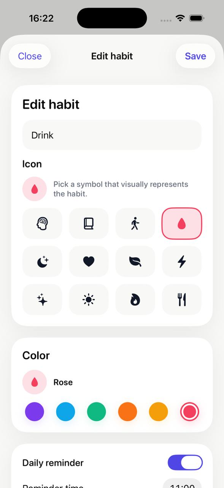

01
Beautiful heatmaps
See your daily, weekly, and yearly consistency at a glance with premium heatmap views built to feel rewarding.
Luminous heatmaps, clear streaks, and premium iPhone widgets, so your daily progress feels visible, rewarding, and impossible to ignore.
See the product →

Streakmap takes a different approach. Instead of drowning you in lists, clutter, and pressure, it turns your progress into a clear visual signal you actually want to look at.
See your daily, weekly, and yearly consistency at a glance with premium heatmap views built to feel rewarding.
Keep your momentum visible with simple streak tracking that motivates without turning your habits into pressure.
Keep your most important habits on your home screen with widgets that are both useful and genuinely beautiful.
Create habits in seconds, check in daily, and watch your streaks and heatmaps grow over time. Designed to make progress feel immediate, motivating, and easy to revisit every day.



The experience is intentionally simple, so building habits feels sustainable instead of exhausting.
Choose a name, icon, and color. Set up habits that feel personal and easy to recognize instantly.
Mark your habits in seconds and keep your streak moving without friction, noise, or complicated setup.
See your consistency evolve through habit heatmaps, yearly overviews, and widgets that stay visible on your home screen.
Streakmap’s widget system is a core part of the product, not an afterthought. Keep a single habit in focus or view your entire year with a premium heatmap card.
Keep one habit front and center with a compact widget card that highlights your streak and recent consistency in one glance.
See more history at once with a wider heatmap layout that still feels clean, readable, and premium on the home screen.
Get a full-year overview of your consistency across habits with a large widget built to keep your entire year visible at a glance.
Streakmap is an independent app I’m building on my own, without investors, without a team, and without tracking pixels. My goal is simple: make something calm, beautiful, and actually useful, the kind of tool I wanted to use myself.
If you join the waitlist, you’re supporting an indie developer directly and helping shape where the app goes next.
A few quick answers for people discovering Streakmap before launch.
Yes. Streakmap is designed as a premium iPhone-first habit tracker with a strong focus on widgets and native feel. A Mac and Apple Watch version may come later depending on demand.
Streakmap is launching on the App Store in Q2 2026. Join the waitlist to be notified the moment it’s live.
Streakmap will be free to try with 1 habit. Premium unlocks unlimited habits, all widget sizes, premium color palettes, and deeper insights.
Monthly: $3.99 · Yearly: $19.99 · Lifetime: $39.99
All your data stays on your iPhone. No accounts, no servers, no trackers, no analytics. Streakmap doesn’t collect, send, or sell anything because it can’t.
The focus is visual motivation, not checklists or gamification. Streakmap turns your consistency into luminous heatmaps and premium widgets you actually want to look at every day.
Yes. You can create unlimited habits with Premium, each with its own icon, color, and visual history. The free version lets you try the app with 1 habit.
iCloud sync across your own Apple devices is on the roadmap and will use your personal iCloud account, with no third-party servers involved.
Not at launch. Import from HabitKit, Streaks, and Habitify is being considered for a future version.
Join the waitlist to be the first to try Streakmap when it launches. No spam, no drip sequence, just one email when the app is live.